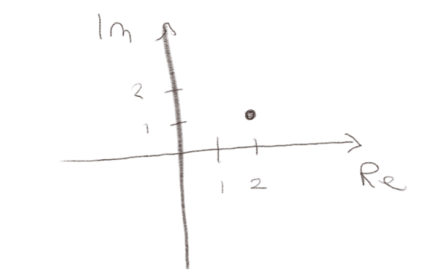
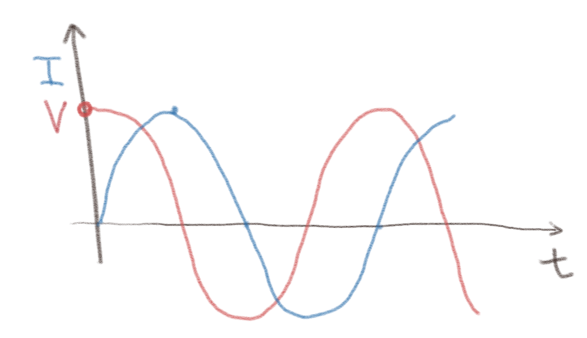
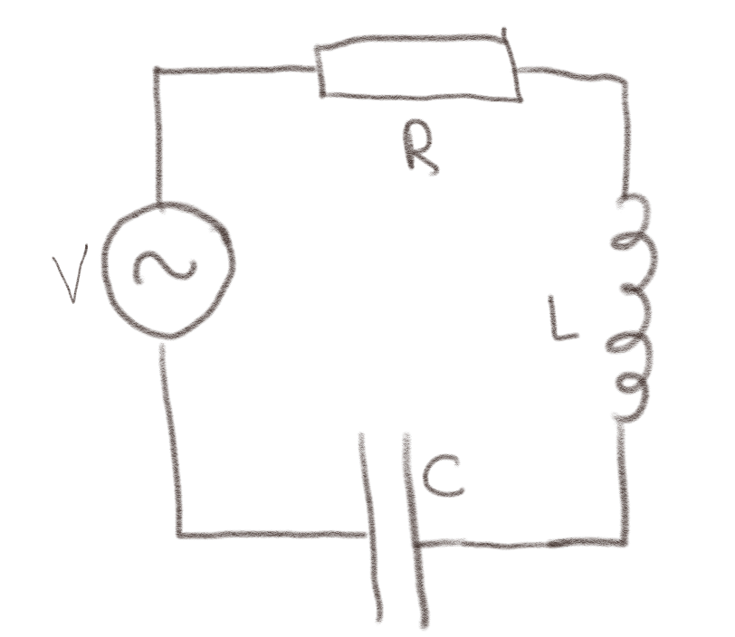

(Lærebok 15.3.1)
La oss kort repetere komplekse tall.
a) Hva er \( |2 + i| \)?
\( \sqrt{5} \)
Det er $$ \begin{equation} \left(|2|^2 + |i|^2 \right)^{1/2} = \sqrt{5} \; . \tag{4} \end{equation} $$
b) Tegn \( 2+i \) i det komplekse planet.

c) Hvordan kan vi skrive \( 2+i \) som \( Ae^{i \phi} \)?
Vi kan skrive den på denne formen ved å skrive \( A = |2 + i| \) og å velge \( \phi \) slik at $$ \begin{equation} \tan \phi = \frac{\text{Im}\{ 2+i \} }{\text{Re}\{ 2+i \} } = \frac{1}{2} \; , \tag{5} \end{equation} $$ som gir at \( \phi = \arctan (1/2) \).
Figuren viser strømmen og spenningen i en krets.

a) Ligger \( V \) før \( I \) eller \( I \) før \( V \)?
Dette havner i hovedsak om hvordan vi leser av denne figuren. Vi ser at \( V \) har et maksimum før \( I \). Vi sier derfor at \( V \) ligger før \( I \). Men det avhenger jo av hvordan man ser det. Vi kan jo også si at \( I \) ligger før \( V \).
b) Hvor stor er forskjellen i fase?
Vi antar at signalene har en sinus-form. Vi ser at strømmen \( I \) er maksimal når \( V \) er null. Vi antar at \( V = 0 \) når fasen er \( \pi/2 \). Det betyr at faseforskjellen er \( \pi/2 \).
c) Hvis \( V = V_0 e^{i \omega t} \) hva er er da \( I \)?
Real-verdien av \( V \) er \( V_0 \cos \omega t \) som stemmer overens med figuren. Vi antar at \( I = I_0 \cos (\omega t + \delta) \). Vi ser da at \( I \) når den samme verdien som \( V \) men med en faseforskjell på \( \pi/2 \). Det betyr at når \( t=0 \) så skal argumentet for \( I \) være \( -\pi/2 \) slik at \( \delta = - \pi/2 \).
(Lærebok 15.3.2)
(Lærebok 15.3.3)
(Lærebok 15.3.4)
For en spole er $$ \begin{equation} I_0 e^{i \delta} = \frac{V_0}{i \omega L} = \frac{V_0}{\omega L} e^{i \delta} \; . \tag{6} \end{equation} $$
a) Hva er fasevinkelen \( \delta \)?
\( -\pi/2 \).
I dette tilfellet ser vi at $$ \begin{equation} \frac{V_0}{i \omega L} = \frac{V_0}{\omega L} (-i) = \frac{V_0}{\omega L} e^{i \delta} \; . \tag{7} \end{equation} $$ Vi ser derfor at \( e^{\delta} = -i \) og dermed er \( \delta = -\pi/2 \).
(Lærebok 15.3.6)
Figuren viser en krets med en periodisk spenningskilde.

a) Hva er en den totale impedansen til kretsen?
Impedansen til hvert enkelt element er $$ \begin{equation} Z_R = R \quad , \quad Z_C = \frac{1}{i \omega C} = \frac{-i}{ \omega C}\quad , \quad Z_L = i \omega L \; . \tag{8} \end{equation} $$ Alle impedansenen er koblet i serie. Vi finner derfor den totale impedansen som $$ \begin{equation} Z_T = Z_R + Z_C + Z_L = R + i \left( \omega L - \frac{1}{\omega C} \right) \; . \tag{9} \end{equation} $$